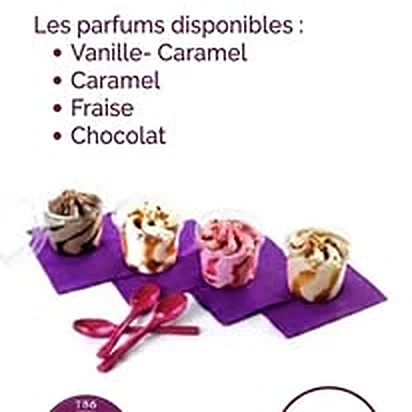
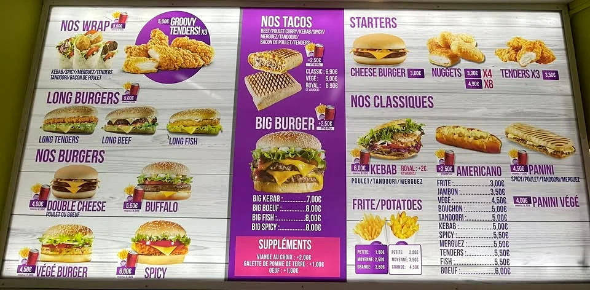
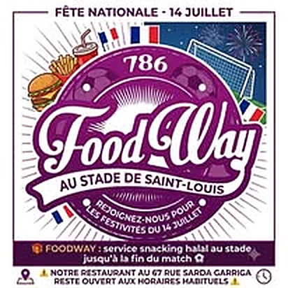

25 août 2026
Les Sundaes à 2,00 €
« Lequel va vous faire craquer ? » Vanille-Caramel, Caramel, Fraise ou Chocolat : une glace à l'italienne pour finir le repas en douceur.
Nouveauté
Américains, paninis, burgers, kebabs, frites, nuggets, tenders et boissons. Tous disponibles aussi en menu, avec un service rapide et des prix accessibles, en face du parking à l'arrière de la mairie.
L'esprit Food Way
Service rapide & prix accessibles
Les mots de Food Way 1 sur sa page Facebook
Une adresse halal du centre de Saint-Louis, où l'on passe à midi comme le soir pour un américain, un kebab ou un burger, à savourer sur place ou à emporter. Chaque spécialité existe aussi en menu, avec frites et boisson.
abonnés suivent Food Way 1 sur Facebook
de recommandations sur la page Facebook (15 avis)
Food Way 1, rue Sarda Garriga, et Food Way 2, au 95 avenue Principale à Saint-Louis.
Du nouveau chez Food Way
Food Way partage régulièrement ses nouveautés sur sa page. Un petit tour des plus récentes :

25 août 2026
« Lequel va vous faire craquer ? » Vanille-Caramel, Caramel, Fraise ou Chocolat : une glace à l'italienne pour finir le repas en douceur.
Nouveauté22 juin 2026
Burgers, kebabs, tacos et frites se dégustent avec la nouvelle sauce persillade, disponible en supplément à 0,50 €.
À tester
14 juillet
Pour les festivités du 14 juillet, Food Way assurait un service snacking halal au stade de Saint-Louis, et le restaurant du 67 rue Sarda Garriga restait ouvert aux horaires habituels.
30 avril 2026
Une soirée conviviale et gourmande chez Food Way 2, au 95 avenue Principale, de 17h30 jusqu'à minuit.
Food Way 2Faites glisser pour voir toutes les nouveautés →
Le menu
Le panneau du menu, publié par Food Way sur sa page Facebook. Wraps, tacos, burgers en version longue ou XXL, grands classiques et frites ou potatoes garnies : il y a de quoi varier les plaisirs.
Pour vos fêtes de fin d'année
Repas de famille, fête de fin d'année, grande tablée entre amis : Food Way loue aussi tout le matériel pour recevoir, à retirer au 95 avenue Principale, à Saint-Louis.
Tarifs sur demande au 0692 83 67 78 ou au 0262 87 09 37.
Infos pratiques
67 rue Sarda Garriga
97450 Saint-Louis, en face du parking à l'arrière de la mairie.
Food Way 2 vous accueille aussi au 95 avenue Principale, à côté de la mosquée.
| Lundi | 11h15 – 13h45 · 18h00 – 21h00 |
| Mardi | 11h15 – 13h45 · 18h00 – 21h00 |
| Mercredi | 11h15 – 13h45 · 18h00 – 21h00 |
| Jeudi | 11h15 – 13h45 · 18h00 – 21h00 |
| Vendredi | 11h15 – 13h45 · 18h00 – 21h30 |
| Samedi | 11h15 – 13h45 · 18h00 – 21h30 |
| Dimanche | 18h00 – 21h00 |
Un coup de fil au 0262 24 47 44 pour confirmer, les jours fériés.
Halal · Menus
Une pause rapide à midi, un repas du soir à emporter : tout est pensé pour aller vite et se régaler à petit prix.
Commander
Le mot de Food Way
Publié le 25 août 2026 :
« Nouveauté chez Food Way 1 ! Découvrez nos nouveaux Sundaes à seulement 2,00 € ! Lequel va vous faire craquer ? »Page Facebook de Food Way 1
« Venez nombreux partager ce moment festif avec nous ! »Food Way 2, invitation au barbecue géant du 30 avril 2026